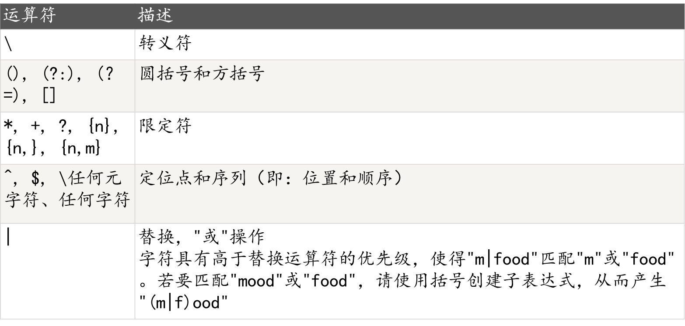

正则表达式
基本字符
1.限定符
- *: 零次或多次{0,}
- +:一次或多次{1,}
- ?:零次或一次{0,1}
- {n}:n是一个非负整数。匹配确定的n次
- {n,}:n是一个非负整数。至少匹配n次
- {n,m}:最少匹配n次且最多匹配m次
2.模式
- 贪婪模式和非贪婪模式
- 当该字符紧跟在任何一个其他限制符（*,+,?，{n}，{n,}，{n,m}）后面时，匹配模式是非贪婪的。非贪婪模式尽可能少的匹配所搜索的字符串，而默认的贪婪模式则尽可能多的匹配所搜索的字符串。例如，对于字符串“oooo”，“o+?”将匹配单个“o”，而“o+”将匹配所有“o”
3.特殊字符
- $:匹配输入字符串的结尾位置
- .:匹配除换行符 \n 之外的任何单字符
- ():标记一个子表达式的开始和结束位置。（分组）
- [:标记一个中括号表达式的开始。（字符簇）
- {:标记限定符表达式的开始（限定符）
- ^:匹配输入字符串的开始位置，除非在方括号表达式中使用，此时它表示不接受该字符集合（[^a-z]）
- |:指明两项之间的一个选择
- :将下一个字符标记为或特殊字符、或原义字符、或向后引用、或八进制转义符。例如， ‘n’ 匹配字符 ‘n’。’\n’ 匹配换行符。序列 ‘\‘ 匹配 “"，而 ‘(‘ 则匹配 “(“
4.定位符
- ^:匹配输入字符串开始的位置
- $:匹配输入字符串结尾的位置
- \b:匹配一个字边界，即字与空格间的位置。(边界运算)
- \B:非字边界匹配。（非边界运算）
- 不能将限定符与定位符一起使用。由于在紧靠换行或者字边界的前面或后面不能有一个以上位置，因此不允许诸如 ^* 之类的表达式
5.字符簇
- [a-z] //匹配所有的小写字母
- [A-Z] //匹配所有的大写字母
- [a-zA-Z] //匹配所有的字母
- [0-9] //匹配所有的数字
- [0-9.-] //匹配所有的数字，句号和减号
- [ \f\r\t\n] //匹配所有的白字符
运算

分组
反向引用
先来看第一个作用，对于IP地址的匹配，简单的可以写为如下形式：
\d{1,3}.\d{1,3}.\d{1,3}.\d{1,3}
我们可以发现一定的规律，可以把.\d{1,3}看成一个整体，也就是把他们看成一组，再把这个组重复3次即可。表达式如下：
\d{1,3}(.\d{1,3}){3}
再来看第二个作用，就拿匹配
可以看出，上边表达式中有两个title，完全一样，其实可以通过分组简写。表达式如下<(title)>.*</\1>
断言
指明某个字符串前边或者后边，将会出现满足某种规律的字符串
- 后发断言(?<= 和 ?<!)
- 先行断言(?= 和 ?!)
- 区分正反（即是否满足条件<=(满足)<!（不满足））
就拿匹配xxx 标签来说，我们想要的是xxx，它没有规律，但是它前边肯定会有，后边肯定会有 ，这就足够了。
想指定xxx前肯定会出现，就用正后发断言，表达式：(?<=<title>).* 想指定xxx后边肯定会出现 ，就用正先行断言，表达式：.(?=) 两个加在一起，就是(?<=).(?= )